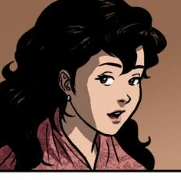
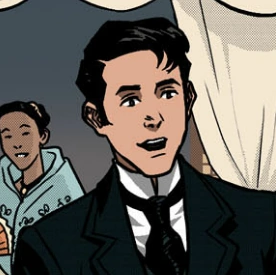

| picture/drawing |
Name |
Information |
|  |
Maria Clara |
She is the daughter of Capitán Tiago and Doña Pía Alba and the fiancee of Crisostomo Ibarra whose full name is María Clara de los Santos |
 |
Padre Damaso |
was the former curate of the parish church of San Diego and the real father of Maria Clara. Opposing his daughter's marriage to Crisostomo Ibarra, the man made efforts to drive the two apart for Maria Clara's sake. |
|  |
Crisostomo Ibarra |
was a young student from San Diego, full name Juan Crisostomo Ibarra y Magsalin Following his father's death, he returned to his hometown and sought to establish a proper school there |